Hongyi (Sam) Dong
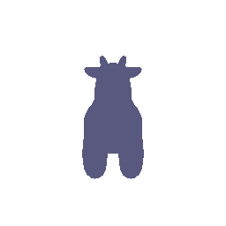
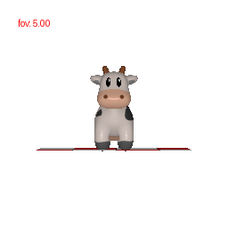
Number of vertices: 4
Number of triangular faces: 4
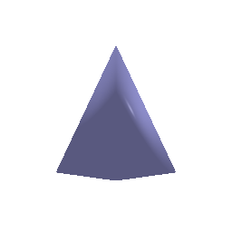
Number of vertices: 8
Number of triangular faces: 12
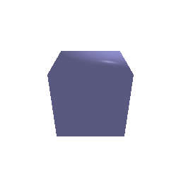
I chose color1 = [1.0, 0.0, 0.0] (red) and
color2 = [0.0, 1.0, 1.0] (cyan). Red and cyan are complementary
colors, so they provide strong visual contrast across the cow. I also wanted
to use a different color pairing from the blue/red example, so I replaced
blue with cyan.
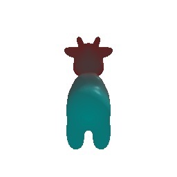
R0 = T0 =
[ 1 0 0 ] [ 0 ]
[ 0 1 0 ] [ 0 ]
[ 0 0 1 ] [ 3 ]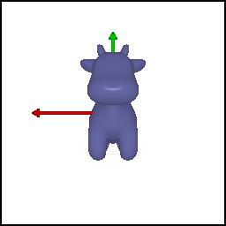
R_relative rolls the camera 90 degrees around its viewing
Z axis, while T_relative is zero because the camera position
remains unchanged.
R_relative = T_relative =
[ 0 1 0 ] [ 0 ]
[ -1 0 0 ] [ 0 ]
[ 0 0 1 ] [ 0 ]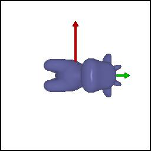
R_relative rotates the camera 90 degrees around the world
Y axis, while T_relative moves the camera to the opposite
side of the cow so that it remains in view.
R_relative = T_relative =
[ 0 0 1 ] [ -3 ]
[ 0 1 0 ] [ 0 ]
[ -1 0 0 ] [ 3 ]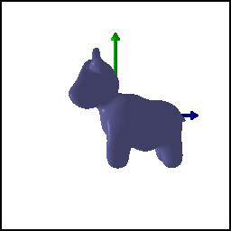
R_relative keeps the camera orientation unchanged, while
T_relative moves the camera farther backward along its
viewing Z axis.
R_relative = T_relative =
[ 1 0 0 ] [ 0.0 ]
[ 0 1 0 ] [ 0.0 ]
[ 0 0 1 ] [ 1.5 ]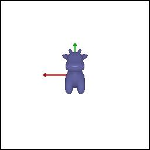
R_relative keeps the camera orientation unchanged, while
T_relative translates the camera parallel to the image
plane.
R_relative = T_relative =
[ 1 0 0 ] [ 0.5 ]
[ 0 1 0 ] [ -0.5 ]
[ 0 0 1 ] [ 0.0 ]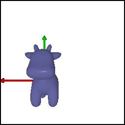
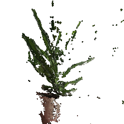
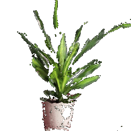
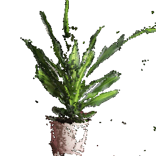
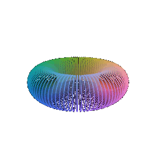
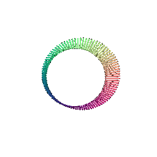
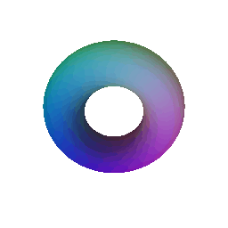
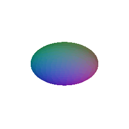
Point clouds and meshes represent the same 3D surface in different ways. In terms of rendering quality, meshes usually produce smoother and more continuous surfaces because triangle connectivity is explicitly stored, while sparse point clouds can contain visible gaps and depend strongly on point density and rendering radius. In terms of memory, point clouds only store point positions and features and do not require face connectivity; however, a dense point cloud may require many more points to represent a smooth surface. A mesh additionally stores triangle indices, but it can often represent a continuous surface using relatively fewer vertices. In terms of ease of use, point clouds are simple to obtain directly from RGB-D data or sampled functions, while meshes are more suitable for rasterization, shading, and explicit surface geometry. For implicit representations, an additional extraction step such as Marching Cubes is required before the surface can be rendered as a mesh.
I constructed a 3D smiley face by combining several parametric point-cloud primitives. The head is sampled from a large parametric sphere, and the two eyes are sampled from smaller spheres positioned on the front of the head. The mouth is generated as a parametric tube following a circular arc, and all of the sampled points and colors are concatenated into a single point cloud before rendering.
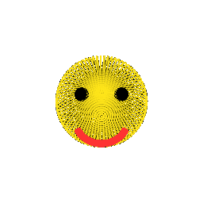
I uniformly sampled 10, 100, 1000, and 10000 points from the surface of the cow mesh.
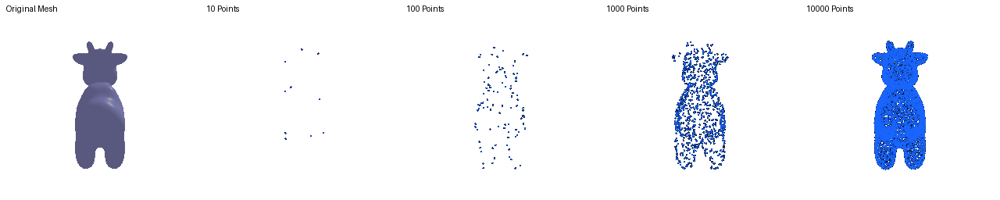